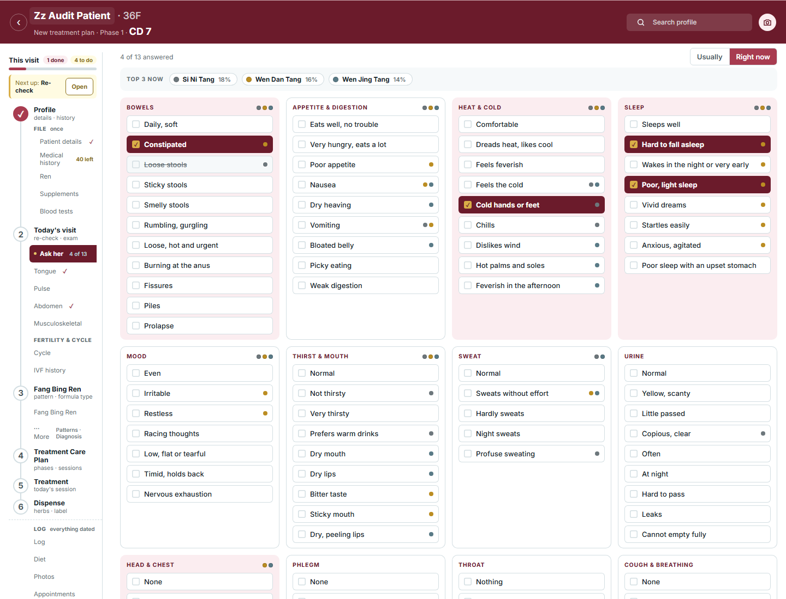
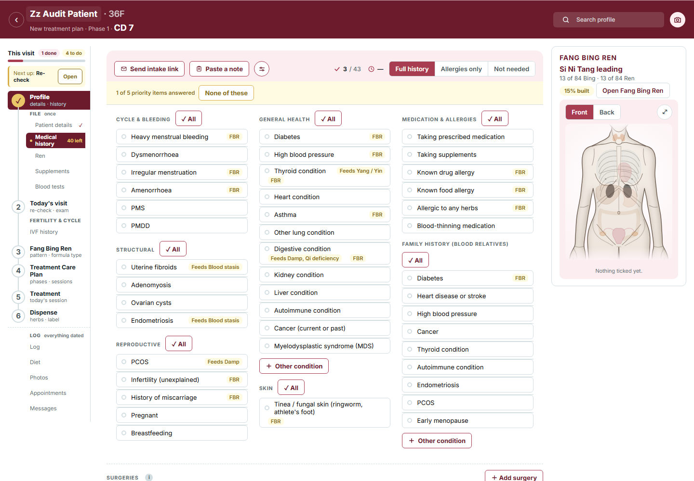
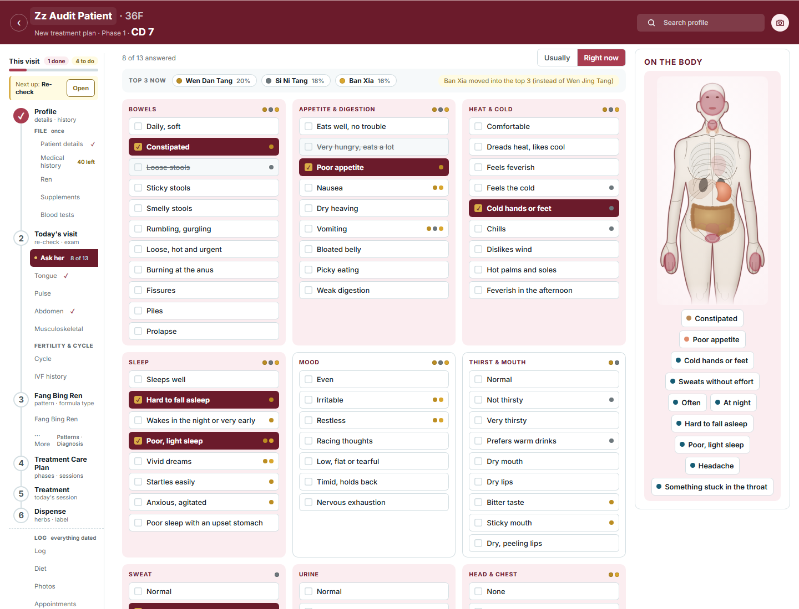
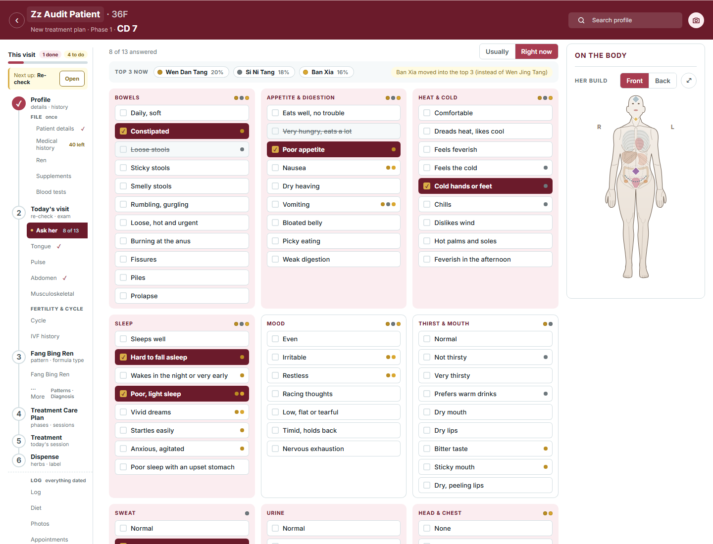
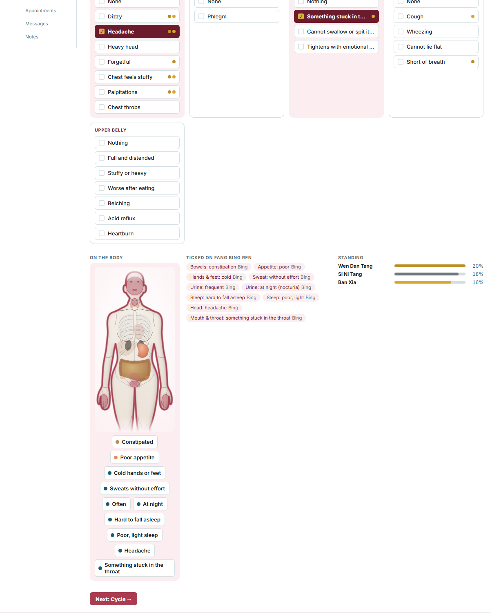
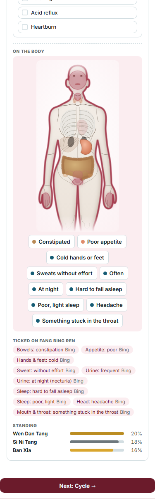
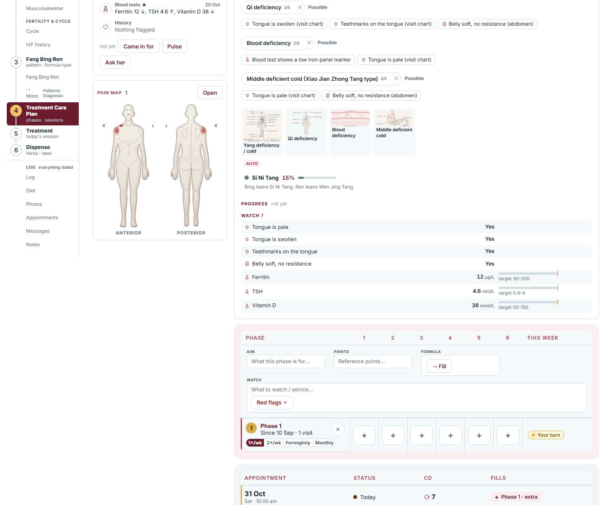
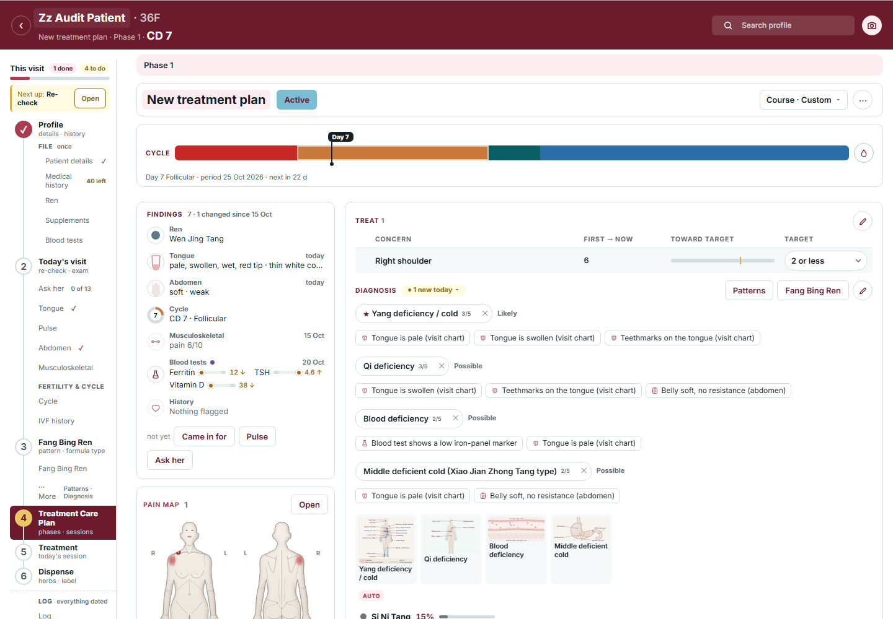
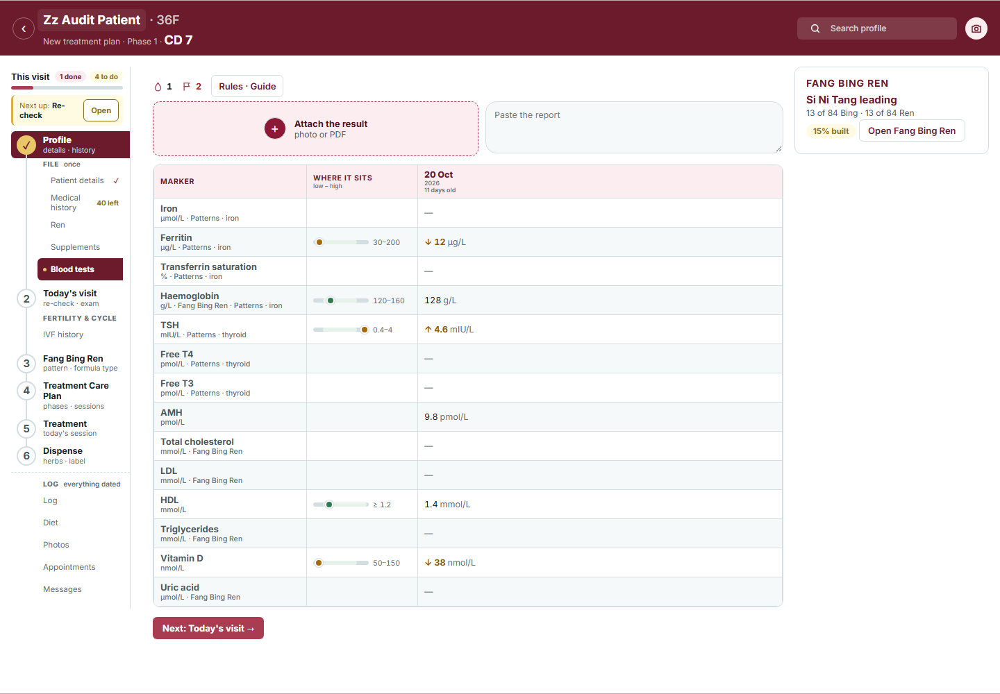

<title>Ask Her Figure, Blood Bars</title>
<style>
  :root { --bg: #FBF8F5; --fg: #2B2623; --soft: #5E5651; --line: #E3DAD2; --card: #FFFFFF; --accent: #8C2B3A; --accent-tint: #F7E9EC; --herb: #165C74; --herb-tint: #EDF5F8; --gold: #B98A2E; --good: #2F7A4F; --low: #A6690A; }
  @media (prefers-color-scheme: dark) { :root:not([data-theme="light"]) { --bg: #1B1715; --fg: #F1ECE7; --soft: #B9AFA7; --line: #3A322D; --card: #251F1C; --accent: #D77A89; --accent-tint: #3A2228; --herb: #7FB3C6; --herb-tint: #1E2F36; --gold: #D9AE47; --good: #6FBF8A; --low: #E8A94A; color-scheme: dark; } }
  :root[data-theme="dark"] { --bg: #1B1715; --fg: #F1ECE7; --soft: #B9AFA7; --line: #3A322D; --card: #251F1C; --accent: #D77A89; --accent-tint: #3A2228; --herb: #7FB3C6; --herb-tint: #1E2F36; --gold: #D9AE47; --good: #6FBF8A; --low: #E8A94A; color-scheme: dark; }
  body { background: var(--bg); color: var(--fg); font: 15px/1.5 "Inter", system-ui, -apple-system, "Segoe UI", sans-serif; padding-block: 24px 48px; padding-inline: 16px; }
  main { max-width: 1100px; margin: 0 auto; display: grid; gap: 28px; }
  h1 { font-size: 26px; line-height: 1.2; margin: 0; text-wrap: balance; }
  h2 { font-size: 13px; letter-spacing: .08em; text-transform: uppercase; color: var(--accent); margin: 0 0 10px; }
  h3 { font-size: 16px; margin: 0 0 6px; }
  p { margin: 0; max-width: 68ch; }
  .lede { color: var(--soft); }
  .facts { display: grid; grid-template-columns: repeat(auto-fit, minmax(170px, 1fr)); gap: 10px; }
  .fact { background: var(--card); border: 1px solid var(--line); border-radius: 10px; padding: 12px 14px; }
  .fact b { display: block; font-size: 22px; font-variant-numeric: tabular-nums; }
  .fact span { color: var(--soft); font-size: 13px; }
  .pair { display: grid; grid-template-columns: repeat(auto-fit, minmax(300px, 1fr)); gap: 14px; }
  figure { margin: 0; background: var(--card); border: 1px solid var(--line); border-radius: 12px; overflow: hidden; min-width: 0; }
  figure img { display: block; width: 100%; height: auto; max-width: 100%; }
  figcaption { padding: 10px 14px 12px; font-size: 13.5px; color: var(--soft); border-top: 1px solid var(--line); }
  figcaption b { color: var(--fg); }
  .opt { border-left: 4px solid var(--accent); }
  .opt.b { border-left-color: var(--herb); }
  .tag { display: inline-block; font-size: 11px; font-weight: 700; letter-spacing: .06em; text-transform: uppercase; padding: 2px 8px; border-radius: 999px; background: var(--accent-tint); color: var(--accent); margin-right: 6px; }
  .opt.b .tag { background: var(--herb-tint); color: var(--herb); }
  .areas { display: flex; flex-wrap: wrap; gap: 6px; margin-top: 8px; }
  .areas span { font-size: 12.5px; padding: 3px 10px; border-radius: 999px; background: var(--herb-tint); color: var(--fg); }
  .bar { display: inline-flex; align-items: center; gap: 6px; font-variant-numeric: tabular-nums; }
  .bar .tr { position: relative; width: 44px; height: 5px; border-radius: 3px; background: var(--line); }
  .bar .tr i { position: absolute; left: 18%; right: 18%; top: 0; height: 100%; border-radius: 3px; background: color-mix(in srgb, var(--good) 22%, transparent); }
  .bar .tr b { position: absolute; top: -2.5px; width: 10px; height: 10px; border-radius: 50%; background: var(--good); border: 2px solid var(--card); box-sizing: border-box; transform: translateX(-50%); }
  .bar .tr b.flag { background: var(--low); }
  .bar small { color: var(--soft); }
  .bar.flag small { color: var(--low); font-weight: 600; }
  .line { background: var(--card); border: 1px solid var(--line); border-radius: 10px; padding: 12px 14px; display: grid; gap: 8px; }
  .line .k { font-size: 11px; font-weight: 700; color: var(--soft); letter-spacing: .04em; }
  .line .was { color: var(--soft); text-decoration: line-through; text-decoration-color: var(--line); }
  .ask { display: grid; gap: 10px; }
  .q { background: var(--card); border: 1px solid var(--line); border-radius: 10px; padding: 12px 14px; }
  .q b { display: block; margin-bottom: 4px; }
  .q span { color: var(--soft); font-size: 14px; }
  .note { font-size: 13.5px; color: var(--soft); }
</style>
<main>
  <header>
    <h1>Ask her gets the body figure, and a blood value becomes a dot on its bar</h1>
    <p class="lede">Idea 5 of your 29 October patient-profile audit, "both". Every picture below is the real app on the sandbox patient (Zz Audit Patient), the new part drawn by a prototype script, so what you see is what gets built.</p>
  </header>

  <section>
    <h2>Measured first · your 27 October records</h2>
    <div class="facts">
      <div class="fact"><b>6</b><span>patients with Ask her answers, 4 of them all 13 topics; all on "Usually"</span></div>
      <div class="fact"><b>54</b><span>topic answers; Sleep 6, Bowels 5, Head 5, Heat 5, Urine 5 lead</span></div>
      <div class="fact"><b>0</b><span>blood results on file, so the bars start empty wherever they go</span></div>
      <div class="fact"><b>21</b><span>patients with a Yes in Medical history: their figure already lights</span></div>
      <div class="fact"><b>30 of 95</b><span>Ask her answers have a spot on Fang Bing Ren's figure (none for sleep, mood, sweat, appetite)</span></div>
    </div>
  </section>

  <section>
    <h2>Before</h2>
    <div class="pair">
      <figure><figcaption><b>Ask her today.</b> Four answers ticked, nothing shows where on the body. The page has no right-hand pane.</figcaption></figure>
      <figure><figcaption><b>Medical history today.</b> The body figure sits in the right-hand pane; a ticked condition lights its organ. This is the figure you asked for on Ask her.</figcaption></figure>
    </div>
  </section>

  <section>
    <h2>The figure beside Ask her · two ways</h2>
    <div class="pair">
      <figure class="opt"><figcaption><span class="tag">A</span><b>Medical history's body, lit by the answers.</b> Constipated lights the bowel, Poor appetite the stomach, Headache and the sleep answers the head, Something stuck the throat, Often / At night the bladder, Cold hands or feet the hands, Sweats without effort the whole outline. The answers sit under it as chips.
        <div class="areas"><span>Head</span><span>Mouth</span><span>Throat</span><span>Lungs</span><span>Heart</span><span>Stomach</span><span>Bowel</span><span>Bladder</span><span>Hands and feet</span><span>Skin, whole body</span></div></figcaption></figure>
      <figure class="opt b"><figcaption><span class="tag">B</span><b>Fang Bing Ren's figure, as on the Ren page.</b> The same eight answers draw one head mark and the belly zones: only 30 of the 95 answers have a spot there, and sleep, mood, sweat and appetite never show.</figcaption></figure>
    </div>
  </section>

  <section>
    <h2>Under 1280px, where there is no pane</h2>
    <div class="pair">
      <figure><figcaption><b>1200px.</b> The figure takes the footer's first column, beside "Ticked on Fang Bing Ren" and "Standing". The chips under it and the ticked list say the same things twice, so one of them can go.</figcaption></figure>
      <figure><figcaption><b>Phone.</b> The footer stacks: figure, chips, ticked list, standing bars.</figcaption></figure>
    </div>
  </section>

  <section>
    <h2>A blood value is a dot on its low–high bar</h2>
    <p class="note">The Blood tests page already does this (built 29 October: a dot on "Where it sits", amber past the line, the number beside). Where a value is still read as a bare number: the Findings row on Care Plan and Treatment, and the Timeline's result line.</p>
    <div class="pair" style="margin-top:12px">
      <figure><figcaption><b>Care Plan today.</b> The Blood tests line reads "Ferritin 12 ↓, TSH 4.6 ↑, Vitamin D 38 ↓": numbers to read.</figcaption></figure>
      <figure class="opt"><figcaption><span class="tag">After</span><b>Each marker is its small bar.</b> The dot sits where the value falls in the typical range, amber past the line, the number small beside it. The flagged markers come first, three at most, as today.</figcaption></figure>
    </div>
    <div class="pair" style="margin-top:14px">
      <div class="line"><span class="k">TIMELINE · RESULT LINE, TODAY</span><span><b>20 Oct</b> · <span class="was">Ferritin 12 ↓ · TSH 4.6 ↑</span></span>
        <span class="k">THE SAME LINE, AFTER</span><span><b>20 Oct</b> · <span class="bar flag">Ferritin <span class="tr"><i></i><b class="flag" style="left:12%"></b></span><small>12 ↓</small></span> &nbsp; <span class="bar flag">TSH <span class="tr"><i></i><b class="flag" style="left:88%"></b></span><small>4.6 ↑</small></span></span></div>
      <figure><figcaption><b>Blood tests today</b> (built 29 Oct). The small bars are this page's own bar, shrunk; same green inside, same amber past the line.</figcaption></figure>
    </div>
  </section>

  <section>
    <h2>What I will ask you in two rounds</h2>
    <div class="ask">
      <div class="q"><b>1 · Which figure beside Ask her</b><span>A Medical history's body lit by the answers · B Fang Bing Ren's figure</span></div>
      <div class="q"><b>2 · Where it sits under 1280px</b><span>the footer's first column · above the cards · wide screens only</span></div>
      <div class="q"><b>3 · The chips under the figure</b><span>they replace the "Ticked on Fang Bing Ren" list · both stay · figure alone</span></div>
      <div class="q"><b>4 · A tap on a lit area or a chip</b><span>spotlights it, as Medical history · also scrolls to its card · nothing</span></div>
      <div class="q"><b>5 · Where the small bars go</b><span>Findings row + Timeline line · Findings only · leave the numbers</span></div>
      <div class="q"><b>6 · The number beside the dot</b><span>stays small with ↓↑ · dot only, number on hover</span></div>
      <div class="q"><b>7 · Past the line</b><span>amber as Blood tests · red as the audit words</span></div>
      <div class="q"><b>8 · How much body</b><span>head to knees · whole body · neck to thighs as Medical history</span></div>
      <div class="q"><b>9 · Usually | Right now</b><span>the figure follows the switch · both, Usually faint</span></div>
    </div>
    <p class="note" style="margin-top:10px">Built without asking, as rule fixes: the three 1px lines above Findings rows go (your separation rule: space and tone, not lines); the figure is front view only (every Ask her area is on the front).</p>
  </section>
</main>
